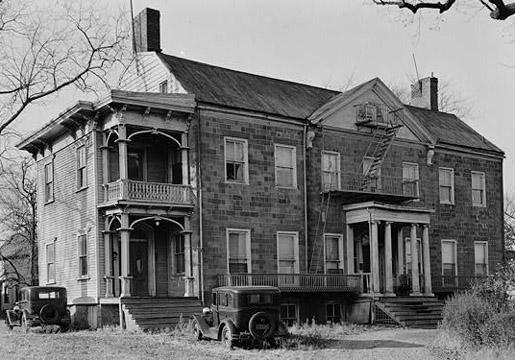

FastCounter by bCentral
War of 1812
General Alexander Macomb, Jr. |
|
Erected circa 1784-1797, frame addition to south end and all windows replaced about 1870. Photo below, courtesy of First Baptist Church of Bloomfield, taken 1935. The house was demolished in 1940. This was originally the home of Sarah Macomb, a widow who lived here with her young daughter. Around 1799 she took in her 17 year old nephew, Alexander Macomb, (1782-1841) who lived with her while he attended Newark Academy. In 1803 he married his cousin Catharine and they continued to live here while he pursued his Military career. He became most famous as the Commanding Officer of a series of stunning U.S. victories during the war of 1812. Major General Alexander Macomb Jr., 1782-1841, Senior Officer and Commanding General of the U.S. Army from 1828 to 1841.  The General Alexander Macomb House, 125 Main Street, Belleville, New Jersey. Married: Maj. Gen. Alexander Macomb of the U.S. Army and Mrs. Harriet B. Wilson Balch, daughter of the Rev. Dr. Balch, Pastor of the Presbyterian Church of Georgetown, May 2, 1826, by the Rev. Mr. McCormick. Sources First Baptist Church of Bloomfield Historical Photographs PICTORIAL FIELD-BOOK OF THE WAR OF 1812 - BY BENSON J. LOSSING - Chapter 37 This site is a work-in-progress.
Snail Mail: PO Box 110252, Nutley NJ 07110
Entire contents
BellevilleSons.com
|